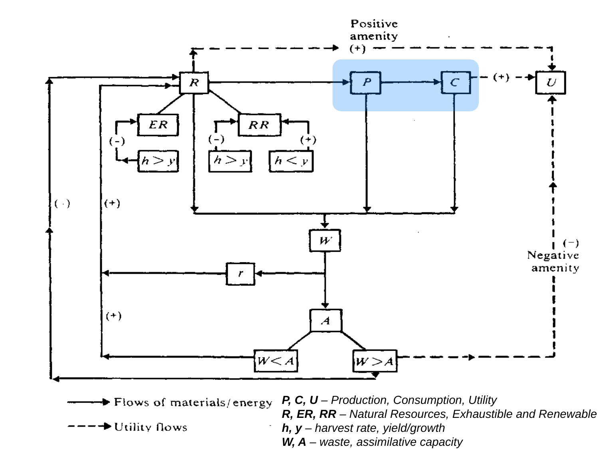

Trace material, waste and utility paths
Explanation, worked examples and practice
Useful first: Classify the four environmental functions
Outcome and conditions
Reconstruct the resource–production–consumption path, waste feedback and three utility paths; distinguish solid materials/energy arrows from dashed utility arrows and signs from quantities; state the limits on K and r.
Study conditions, assessment scope and sources
- The economic core: firms and households
- Reading the physical and utility network
- Several paths to wellbeing
Supported/completion work may use the finished note and named figure. Independent and delayed checks use no notes, figures, keys, web, AI or hints; a blank page is allowed. O003 may use a basic calculator for comparisons, without conceptual help. The tutor confirms known access/exposure conditions before scoring independence. Tasks describing a figure may be answered verbally or by drawing; the arrow legend and interpretation must still be produced unaided. The allowed hypothetical contexts/numbers instantiate the notes and add no course claims.
Prerequisites and checks
Check the prerequisites
O002-PRE-O001 v2 (item_version 2). Prerequisite O001. Needed because the network distinguishes material inputs, waste reception and direct amenity effects before tracing their arrows.
Components probed: identify_four_functions: resource, sink and demand-service relationships; distinguish_coexisting_functions. Resource subtypes and the biospheric category are not needed for this particular path-entry diagnostic.
Prompt: A simplified sketch shows nature supplying an input to production, receiving an unwanted output from production, and giving people direct scenic enjoyment. Name the environmental function for each relationship. Does drawing all three at the same location force one exclusive function? Explain.
Key and essential reasoning: Input to production is the resource function; reception of unwanted output is the sink/assimilative-capacity function; direct scenic enjoyment is a demand service. These are different relationships, so several functions can coexist at one location. A place label alone does not collapse them into one function. The question does not ask for a resource taxonomy or a fourth-function example.
Rubric: Pass requires all three function assignments and the distinct-relationship reason for coexistence. Partial means one missing assignment or coexistence reason without a contrary claim. Fail means conflating all relationships as resources or asserting that one site can have only one function. An insufficiently interpretable response is unscorable; clarify the existing prompt once without supplying an answer.
Conditions and use: Ask this focused diagnostic once before targeted recap, without notes, figures, keys or hints. Record any known relevant exposure; unknown assistance/access makes diagnostic independence unscorable and routes to support. A pass permits the named dependency components for this downstream lesson only; it does not establish the upstream objective's full acquisition or delayed retention. This prompt is a distinct focused item, not the upstream I1/I2 prompt or a substitute for those full acquisition checks. Do not repeat diagnosis after failure.
Repair route: After partial/fail or unscorable conditions, use O001 explanation for the named distinction, then O001 S1. Assess upstream full acquisition with its untouched, distinct I1 and I2 only if that prerequisite acquisition is needed; hide their keys before the response and confirm no exact full-item exposure. This focused diagnostic does not expose either full item's exact scenario, requested whole-capability answer or key. Return to this downstream lesson after the needed dependency is demonstrated; do not present this diagnostic again as fresh learning evidence. If an upstream I item is already exposed for another reason or its bank is exhausted, raise plan_issue rather than improvising a replacement.
Adequate qualifying current or explicitly approved compatible prerequisite evidence permits skipping the matching diagnostic. A focused diagnostic permits only the named dependency components; no acquisition or delayed-retention result is inferred.
Motivation, intuition, and definitions
More production is only one change within a network. Benefits from consumption, direct amenities and losses from environmental pressure travel along different paths, so one output measure cannot determine the whole welfare effect.
Terms and symbols are defined in the explanation below and exact cited sections. In network lessons \(P\) denotes production, \(C\) denotes consumption, \(U\) denotes utility, \(R\) denotes natural resources, \(\mathrm{ER}\) denotes exhaustible resources, \(\mathrm{RR}\) denotes renewable resources, \(h\) denotes harvest rate, \(y\) denotes yield/growth, \(W\) denotes waste, \(A\) denotes assimilative capacity. These are qualitative labels; units are supplied explicitly only in our hypothetical comparisons.
Relevant finished-note figure: 
Relevant finished-note figure: 
Explanation steps
- In the core figure firms are production P and households consumption C. Labour, savings, wages and rent/interest are labels in that core. K is conventionally capital but is not separately defined by the source. The solid/dashed legend below belongs to the full network figure; do not apply it retroactively to every line of the simpler core.
- In the full network solid arrows carry materials/energy: natural resources R support P, P supplies C; solid paths from R, P and C join waste W.
- Waste connects to assimilative capacity A and can feed back to resources. The sign of the capacity branch is conditional; detailed inequalities are O003.
- Dashed arrows carry utility effects: C has a positive link to U; resources have positive amenity links to U; waste above capacity has a negative amenity path to U. U represents benefit/wellbeing without a numerical scale.
- Plus/minus denote qualitative direction, not coefficients, euro values or a sum that permits net-welfare calculation. The lower-case r appears on a material return path but has no supplied definition, rate or equation. Identifying that visible path is supported; assigning a verified recycling parameter is not.
Read the full explanation
Reading context
Deliver these complete reused passages before the worked example; earlier concise prompts are checkpoints, not substitutes. Necessary prerequisites use the complete prepared lessons specified above.
Source passage
Origin: reused complete checked passage The economic core: firms and households; fingerprint efb3d63bd3709f51261b845db081603746a89796298bbe89a4849ca6e0e84b23. Heading depth alone is adapted.
The economic core: firms and households
Economic core reproduced from 00_Intro.pptx, slide 3, through a local LibreOffice PDF rendering. Firms represent production (\(P\)), households represent consumption (\(C\)), and the figure also labels \(K\), labour, savings, wages, and rent/interest. 00_Intro.pptx, slide 3
Read the figure first as an economic relationship. Firms produce what households consume. Labour and savings appear above the two groups, while wages and rent/interest appear below them. The loop beside firms is labelled \(K\), the conventional capital symbol; the source gives no separate definition or numerical relationship for \(K\). The point of the next slide is to place this compact economic core inside the wider resource, waste and utility network. 00_Intro.pptx, slides 3–4
Source passage
Origin: reused complete checked passage Reading the physical and utility network; fingerprint efb3d63bd3709f51261b845db081603746a89796298bbe89a4849ca6e0e84b23. Heading depth alone is adapted.
Reading the physical and utility network
Environment–economy network reproduced from 00_Intro.pptx, slide 4. Solid arrows denote flows of materials/energy; dashed arrows denote utility flows. The blue highlight locates production and consumption within the wider network. Plus and minus signs show qualitative directions of effect. 00_Intro.pptx, slide 4
The symbols supplied by the slide are:
| Symbol | Source meaning |
|---|---|
| \(P\) | Production |
| \(C\) | Consumption |
| \(U\) | Utility |
| \(R\) | Natural resources |
| \(ER\) | Exhaustible resources |
| \(RR\) | Renewable resources |
| \(h\) | Harvest rate |
| \(y\) | Yield/growth |
| \(W\) | Waste |
| \(A\) | Assimilative capacity |
The diagram also contains a lower-case \(r\) on the return path from waste toward resources. The source's printed legend does not define \(r\). The path can be identified visually as a material return path, but this note does not assign it a verified name, rate, or equation. 00_Intro.pptx, slide 4, lower-left return path and legend
Resource use and replenishment
The main horizontal physical path runs from natural resources (\(R\)) through production (\(P\)) to consumption (\(C\)). The resource branch separates exhaustible resources (\(ER\)) and renewable resources (\(RR\)). On the exhaustible branch, the displayed case \(h>y\) connects with a negative sign. On the renewable branch, \(h>y\) has a negative sign, whereas \(h<y\) has a positive sign. 00_Intro.pptx, slide 4, left resource branches
These inequalities compare harvesting with yield or growth. If harvesting exceeds growth, use runs ahead of replenishment and the diagram represents a reduction of the resource. If harvesting is below growth on the renewable branch, replenishment can exceed removal and the diagram represents a positive effect on that resource. For this interpretation, \(h\) and \(y\) must refer to comparable quantities over the same time interval. This comparability is a mathematical requirement of reading the inequality, rather than a separate numerical assumption supplied by the slide. The diagram does not specify a growth function, units, a time horizon, or an equality case \(h=y\). It therefore supports directional reasoning, rather than a calculation of a sustainable harvest level. 00_Intro.pptx, slide 4
Waste and capacity
Solid paths from the resource, production and consumption parts of the diagram join the waste node \(W\). Waste then connects to assimilative capacity \(A\). Two cases appear below it: \(W<A\) and \(W>A\). The \(W<A\) branch returns to resources with a positive sign. The \(W>A\) branch returns with a negative sign and also produces the dashed negative amenity connection to utility. 00_Intro.pptx, slide 4, waste/capacity branches
Read \(W<A\) as waste remaining below the capacity represented in this schematic model, and \(W>A\) as waste exceeding it. The latter case makes the feedback explicit: undesirable output can impair the environmental resource base and reduce utility. As with harvesting and growth, the comparison requires a common basis of measurement. The slide gives no units or detailed physical law and does not discuss the equality case \(W=A\). It also does not establish that all waste below capacity is harmless in every setting. The diagram's positive and negative arrows represent its qualitative framework, not a universal empirical emissions rule. 00_Intro.pptx, slide 4
Several paths to wellbeing
Consumption has a positive dashed link to utility. Natural resources also connect to utility through the upper “Positive amenity (+)” path, while waste exceeding capacity connects through the lower-right “Negative amenity (−)” path. These distinct paths show why production or consumption alone cannot describe the whole environment–economy relationship: the same network contains benefits from consumption, benefits from environmental amenities, and losses associated with environmental pressures. This is an explanatory reading of the diagram, not a quantitative welfare formula. 00_Intro.pptx, slide 4
Worked example
O002-W1 v1, instruction only. Agent-created scenario: production and consumption rise while waste exceeds the capacity shown by the diagram. Explain what can be traced without calculating net wellbeing.
Worked solution: Step 1: trace resources \(R\to P\to C\) as material/energy. Step 2: outputs from economic activity join \(W\), then the \(W>A\) branch feeds back negatively to resources and through a negative amenity path to \(U\). Step 3: \(C\) still has a positive utility path and \(R\) a positive amenity path. Step 4: positive and negative directions coexist; no magnitude/utility function resolves their net effect. \(K\) has only a conventional interpretation; \(r\) remains undefined. This supports tracing mechanisms, not ranking the policy numerically.
Practice with fading assistance
Write your reasoning, then reveal the complete key to check each step.
A local draft for your own study.
Reveal explanation
Key and essential reasoning: \(R\to P\to C\) are solid material/energy paths; emitting nodes \(R,P,C\) connect to \(W\). \(C\to U\) positive dashed utility; \(R\to U\) positive amenity; \(W>A\to U\) negative amenity. Signs are directions, not sizes/net utility. \(K\) conventionally capital without a supplied definition; \(r\) undefined return-path label, no verified rate/equation.
Component mapping: trace_economic_physical_paths, distinguish_utility_paths, interpret_signs_and_undefined_symbols. Rubric: pass requires every keyed component and requested reason/source limitation; partial means a missing component without a contradictory mechanism; fail means a critical misconception listed below; unscorable means insufficient interpretable response or unknown conditions. Accept equivalent plain-language reasoning; source-specific distinctions must remain.
A local draft for your own study.
Reveal explanation
Key and essential reasoning: Firms \(P\) produce what households \(C\) consume; full physical path \(R\to P\to C\), emitting nodes \(R,P,C\) connect via \(W\to A\), \(W>A\) negative resource feedback. Solid: material/energy; dashed: utility. \(C\to U\) positive, \(R\to U\) positive amenity, \(W>A\to U\) negative amenity. Directions have no magnitudes/monetary scale or net welfare formula. \(K\) is conventionally capital but separately undefined; \(r\) undefined on material return path.
Component mapping: trace_economic_physical_paths, distinguish_utility_paths, interpret_signs_and_undefined_symbols. Rubric: pass requires every keyed component and requested reason/source limitation; partial means a missing component without a contradictory mechanism; fail means a critical misconception listed below; unscorable means insufficient interpretable response or unknown conditions. Accept equivalent plain-language reasoning; source-specific distinctions must remain.
A local draft for your own study.
Reveal explanation
Key and essential reasoning: Dashed \(R\to U\) is positive amenity utility, not shipment; plus is qualitative, not measured euro benefit; \(r\) is undefined, though its return path is visible. \(R\to P\to C\) solid physical flows, emitting nodes \(R,P,C\) connect via \(W\to A\); \(W>A\) has negative resource and utility feedback. \(C\to U\) positive, \(R\to U\) positive, \(W>A\to U\) negative. \(K\) has only conventional capital reading; source gives no definition/equation. Net welfare lacks magnitudes.
Component mapping: trace_economic_physical_paths, distinguish_utility_paths, interpret_signs_and_undefined_symbols. Rubric: pass requires every keyed component and requested reason/source limitation; partial means a missing component without a contradictory mechanism; fail means a critical misconception listed below; unscorable means insufficient interpretable response or unknown conditions. Accept equivalent plain-language reasoning; source-specific distinctions must remain.
Rubric and independence
Self-assessment criteria and tutor checks
Every I and D task explicitly tests all indexed components: trace_economic_physical_paths, distinguish_utility_paths, interpret_signs_and_undefined_symbols. Acquisition requires passes on two distinct fresh unassisted current-criterion tasks, I1 and I2. This is an operational acquisition threshold, not a personalized retention guarantee. Supported tasks and C1 cannot substitute for either independent role. Delayed items cannot substitute for acquisition roles in this initial plan. These route restrictions ensure all components receive two complete checks. No numeric point scale is invented.
A missing keyed reason/limit is partial, even if labels or inequalities are right. Wrong mechanism, reversed sign, conflated arrow/service categories, unsupported equality/optimal-policy/universal-safety claim, or invented verified definition is a critical conceptual error and fails the relevant whole task. For O003, a lone transcription/comparison slip with a correct stated mechanism is partial rather than diagnosed conceptual failure; clarify once without providing the answer. Unknown help/exposure conditions do not produce independent pass evidence. General source-faithful alternatives are acceptable; unsupported alternatives trigger a plan issue instead of improvised grading.
Misconceptions and correction
Sign: dashed arrows become shipments, or a positive arrow is treated as a numerical utility value. Tentative after one answer; use a fresh multi-path account before concluding. Correction: read the legend first, distinguish a physical path from a wellbeing effect, then ask what magnitude information is absent. Hint 1: identify the arrow type. Hint 2: compare the positive consumption and negative waste utility paths.
Score the original answer first; use at most the two hints above, then explain the prepared missing step. Corrective feedback creates exposure.
O002-C1 v1, fresh correction, assistance allowed: Repair this account: “\(P\) and \(C\) determine all wellbeing; waste stops at the sink; every plus is a euro gain.” Supply \(R\to P\to C\), waste feedback when \(W>A\), three utility paths, legend, and limitations on \(K\)/\(r\).
Key: \(R\to P\to C\) physical flows; emitting nodes \(R,P,C\) feed \(W\to A\), \(W>A\) negatively affects resources and \(U\). \(U\) has \(C\) positive, \(R\) amenity positive and excess-waste amenity negative paths, so \(P\) and \(C\) alone are insufficient. Solid materials/energy, dashed utility; signs qualitative, no euro/net formula. \(K\) conventional capital without explicit definition; \(r\) undefined return label.
Rubric: the full keyed component set correct = correction pass; omitted reason/limit = partial; repeated critical mechanism error = fail. C1 is repair evidence and does not establish acquisition. If I1/I2 are already exposed or exhausted, stop and request new prepared variants from plan.
Immediate and delayed checks
I1 and I2 above are the immediate checks. A delayed check requires at least 24 elapsed hours since the latest relevant instruction/feedback/exposure (an operational guard), one fresh unused delayed item, closed notes and known no-help conditions. Ask before recap and record intervening exposure; an early or exposed attempt is practice. Each delayed task covers all components, so one qualifying pass demonstrates performance on this bounded delayed form; it is separate from acquisition and does not prove broad transfer.
A local draft for your own study.
Reveal explanation
Key: \(P\) firms produce, \(C\) households consume, \(R\to P\to C\) material/energy; emitting nodes \(R,P,C\) connect via \(W\to A\); \(W>A\) resource feedback negative. \(C\to U\) positive dashed utility, \(R\to U\) positive amenity, \(W>A\to U\) negative amenity. Solid physical, dashed utility; signs directions only, no net/money calculation. \(K\) conventionally capital but separately undefined; \(r\) undefined visible return label.
Rubric: all requested components and reasons/limits with no critical error = pass; omission = partial; critical misconception = fail; unknown access/conditions = unscorable for independence. The same independence rules apply.
A local draft for your own study.
Reveal explanation
Key: \(R\to P\to C\) and emitting nodes \(R,P,C\) connect via \(W\to A\) are physical; \(W>A\) negatively feeds resources. \(C\to U\) positive, \(R\) amenities\(\to U\) positive, \(W>A\) negative amenities\(\to U\): competing utility directions prevent a net judgment without magnitudes. Solid materials/energy, dashed utility; signs are not amounts. \(K\) conventional capital without explicit source definition and \(r\) undefined, so no verified equations.
Rubric: all requested components and reasons/limits with no critical error = pass; omission = partial; critical misconception = fail; unknown access/conditions = unscorable for independence. The same independence rules apply.
Content provenance and generation boundaries
Sources and scope
Complete checked-note passages above are reused with only heading-depth and explicit mathematical typography adaptation; exact origin/fingerprint and asset dependencies are in source_manifest.md. All earlier plan-created exercises/full keys and named evidence routes remain intact. Hypothetical arithmetic instantiates the included definitions and does not introduce empirical results or new academic claims. Only named prepared full-capability forms and their existing permitted pairs can certify acquisition/delayed evidence. Extra checked explanation/practice cannot replace a named full form or reassessment gate. Equivalent verified methods may meet the unchanged pre-answer criterion; ambiguous criteria or an exhausted fresh bank return to plan. The current objective revision is 3; item/criterion versions remain as explicitly stated above.